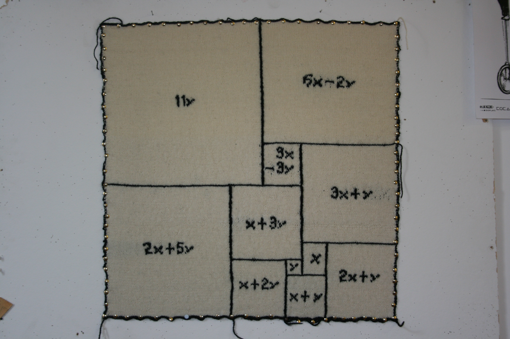

<TITLE>Dissecting a square into smaller squares all of different sizes
</TITLE>


        <TR ALIGN="center" VALIGN="middle">
        <TD ALIGN="center" BGCOLOR="#FFFFFF">
        <FONT SIZE="+2">Dissecting a square into smaller squares all of different sizes </FONT></TD><p>
(Notes for the exhibition <b>Very Important Knitting</b> at the High Street Project Gallery in Christchurch)<p>
<p>


Can you chop up a square into smaller squares <i>all of different
sizes?</i> It's easy enough to chop a square into smaller squares all the
same size, but all of different sizes?  That was the question
addressed by the Important Persons of the <A HREF ="http://www.srcf.ucam.org/tms"> Trinity Mathematical
Society</A>. (TMS) in 1936-8.  (The Important Persons were the committee
of the TMS, and the TMS was&mdash;and still is&mdash;a society for mathematics
students at the University of Cambridge who belong to Trinity College.)
<p>
One of the Important Persons was <A HREF ="http://en.wikipedia.org/wiki/W._T._Tutte">William Tutte </A>,
who went on to do
Important Things in cryptography in WWII.  (I could tell you about
them but I would then have to kill you.)  He was a friend of Martin
Gardner, the world's first (and probably only) mathematical
journalist, who wrote up their story in <i>More
Mathematical Puzzles and Diversions</i> (London G. Bell
and Sons 1963 (pp 136--153)).

<p>
<i>En route</i> to finding a square dissected into squares the Important
Persons tried various strategies, one of which was to draw rectangles
dissected into squares, and then&mdash;by looking at how the squares
fitted together&mdash;try to deduce what the lengths of the sides must be.
<p>
 The knitted square that you see below and on the left is a
realisation of one of these experimental rectangles, with the working
still showing.  You will see inside each square a formula in x and y.
Two of the squares&mdash;one might think of them as the <i> seeds</i>&mdash;
have the simplest possible formul<i>ae</i> inside them: x and y. The
formula inside each square gives you the linear dimensions of that
square in terms of the linear dimensions of the two <i> seed</i>
squares.  If you examine them carefully you can see how the lengths of
many of the sides can be deduced from the assumption that the
length-of-side of the two seed squares are <i>x</i> and <i>y</i>. (The whole
rectangle is not actually an <i>exact</i> square, being 176 by 177
rather than 176 by 176, but the difference is not apparent to the
naked eye.)  The long side of the rectangle on the top right must be
both <i>14y - 3x</i> and <i>(3x - 3y) + (3x + y)</i>, from which we deduce that <i>x</i> =
16 and <i>y</i> = 9.

The reason why you do not see the intended companion piece&mdash;in which
the squares are supplied in colour and without the workings&mdash;is that
the companion piece was stolen!  In fact over the years I have knitted
no fewer <i> three</i> versions of this rectangle, and the first two
were stolen.  (The third panel was presented to the committee of the
TMS and is now at a secret location in Trinity College Cambridge, and that is the one you see below).
The first one was stolen by my sister from my parents' house, and the
second one was stolen from the Department of Philosophy and Religious
Studies at Canterbury University in Christchurch (the Christchurch
constabulary have not closed the file on this theft, and this makes me
the only Mathematical Logic Ph.D. in the world one of whose works is
on the register of stolen art). Perhaps it was stolen by a Religious
Studies student who was under the impression that it has magical
powers, like the magic squares or the Cirencester word square;
<p>

S&nbsp; A&nbsp; T&nbsp; O&nbsp; R<br>
A&nbsp; R&nbsp; E&nbsp; P&nbsp; O<br>
T&nbsp; E&nbsp; N&nbsp; E&nbsp; T<br>
O&nbsp; P&nbsp; E&nbsp; R&nbsp; A<br>
R&nbsp; O&nbsp; T&nbsp; A&nbsp; S<br>
<p>

...perhaps the thief has made it into an altarpiece somewhere and is&mdash;even as we speak&mdash;sacrificing babies in front of it to make the sun
come up.  I am not sure that I want to find out.  <p> Fortunately
these squares brought to you by The Important Persons are not from the
Age of Magic.  In the Ancient world and well into the Middle Ages
people believed that numbers had magical properties, and could be used
in spells and the like. When St Augustine warned his readers against
mathematicians, he was really talking about numerologists and
astrologers.  The question of whether or not we could dissect a square
in this way is one that the mathematicians of Ancient Greece would
have understood had they encountered it, but there is no reason to
suppose they ever did.  It's tempting to speculate about what the
Ancient World would have made of the Important Persons' squares had
they found any. Given the intellectual climate of the time it would
surely have been incorporated into religion or popular
superstition&mdash;somehow.  The Greeks wrote about politics and they thought
about how to design a perfect society.  Perhaps this
square&mdash;dissected into little squares which are all of different
sizes and are all in precisely the right place&mdash;would have come to
represent how perfect individuals can be fitted together to form a
perfect society.  <hr> <br> (Annoyingly the right-hand knitted square needs
to be reflected in a horizontal axis if the two squares are to
match...)

<TABLE WIDTH="95%" CELLSPACING="3" CELLPADDING="3" BORDER="0">

 <TR ALIGN="center" VALIGN="middle">

 <TD ALIGN="center">

 </TD>

 <TD ALIGN="center">

 </TD>

 
 </TR>

 <TR ALIGN="center" VALIGN="middle">

 <TD ALIGN="center" BGCOLOR="#FFFFFF">

 <FONT SIZE="+1"></FONT>
 </TD> 

 <TD ALIGN="center" BGCOLOR="#FFFFFF">

 <FONT SIZE="+1">

 </TD> 

 </TR>


</TABLE>
<HR>


<p>
<A HREF="http://www.dpmms.cam.ac.uk/~tf"> Return to Thomas Forster's home page </A> 
